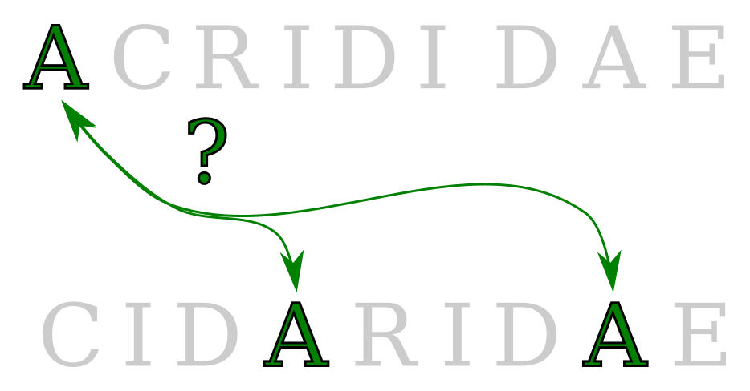
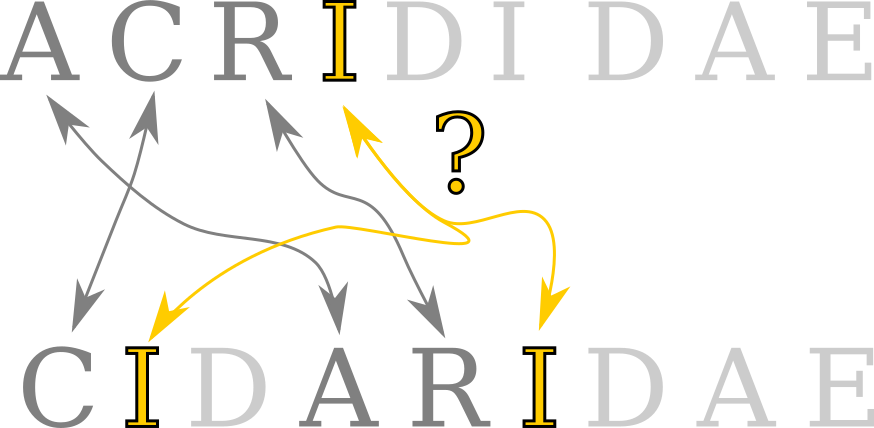

| 12 | 12 |
My 1991 program was quite straightforward:
It tries every possible mapping of the letters
But not all 9! = 362,880 — instead just 2³ = 8

It takes a partial mapping from one word to the other
Extends the mapping one position at a time

At the end, it counts the chunks
Minimum chunks over all mappings is the anagram's score
| Next | |
Next |